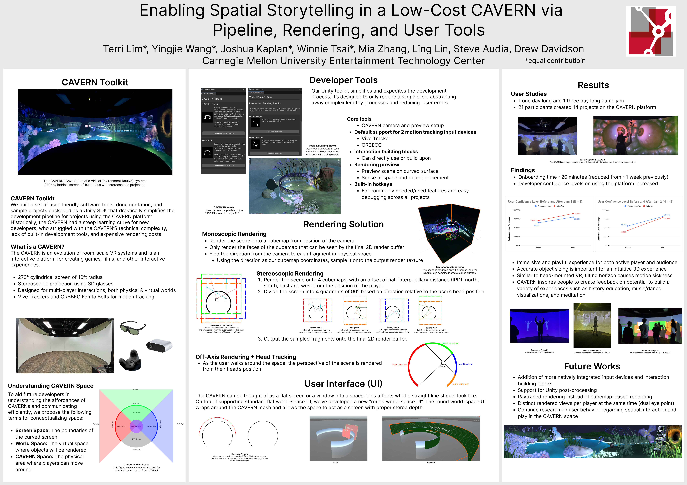
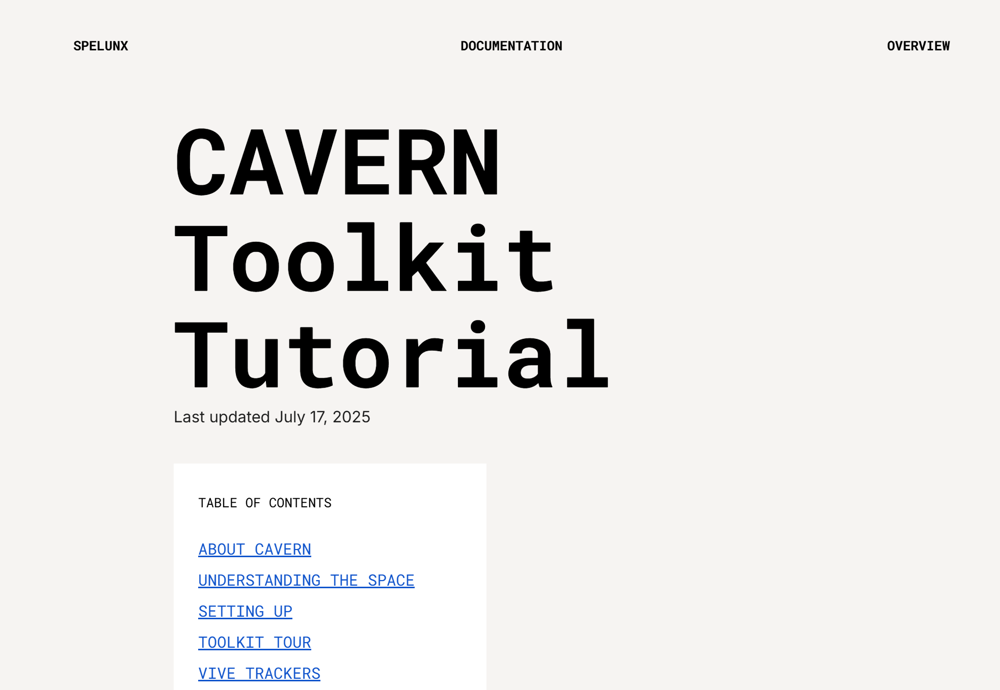
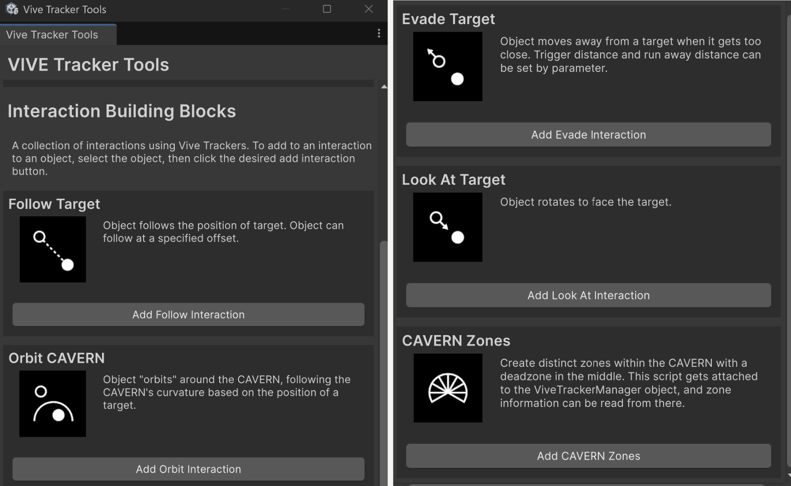
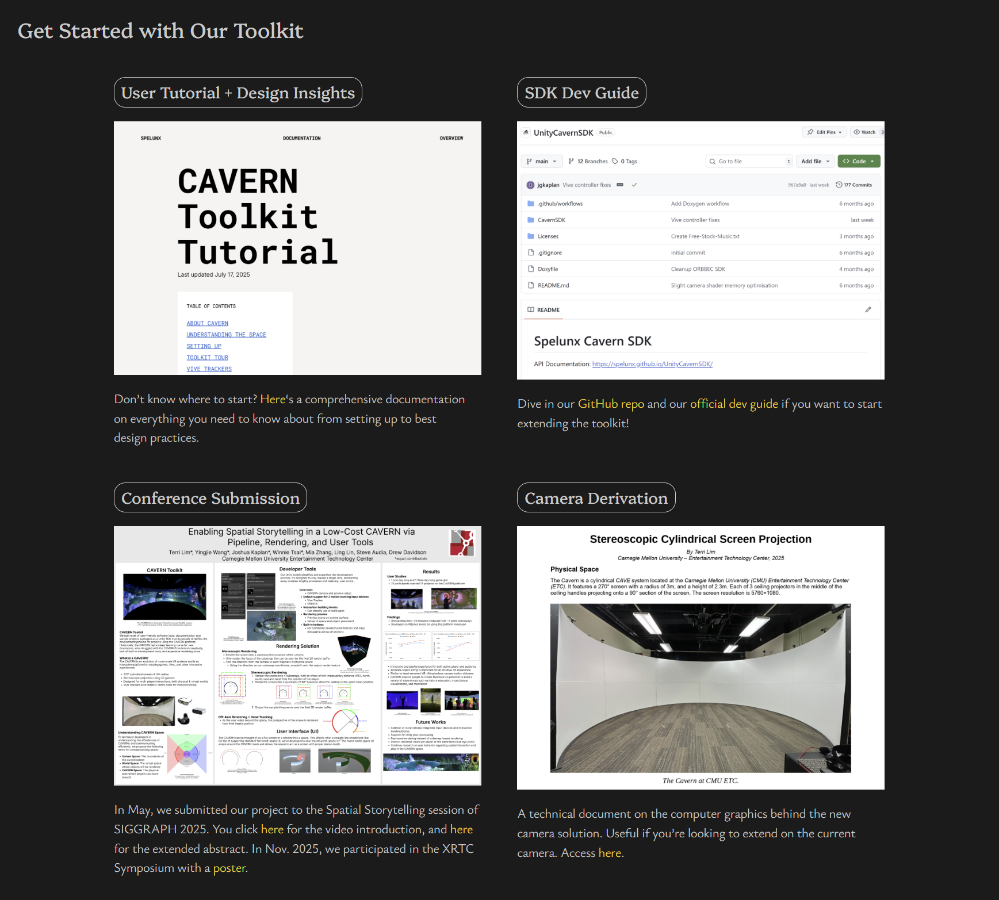

01 Overview
CAVERN is a 270-degree stereoscopic immersive space that supports shared room-scale experiences through surround sound, spatial tracking, body tracking, and large-scale projection. The platform is powerful and immediately exciting to experience, but historically difficult to develop for because creators had to understand unfamiliar hardware, rendering constraints, and spatial interaction conventions before they could begin making anything meaningful.
Team Spelunx created a Unity toolkit to lower that barrier. The toolkit streamlined core platform setup, while our sample scene, documentation, website, tours, and workshops helped developers understand not only how to use CAVERN, but what kinds of experiences it could enable.

02 My Main Contributions
As a technical designer and developer evangelist, my work focused on bridging the technical capabilities of the platform and developer understanding.
Developer Research
Interviewed past and prospective developers of the platform to understand pain points for different project needs, identify onboarding barriers, and prioritize feature needs.
Interaction Design & Implementation
Designed and implemented interaction building blocks in Unity 6 as an optional feature for novice developers. I also created the main demo scene that introduces the affordances of the platform to any CAVERN audiences.
Documentation & Communication
Created user-facing documentation and iterated on it after the hosted game jams, maintained the project website for communication with more stakeholders, and translated toolkit features into approachable learning materials for various audiences — including high school students in a game development workshop setting.
Validation & Outreach
Led tours, workshops, and game jams to observe how developers understood the platform and what they wanted to create with it. Served as the spokesperson for the sample scene, communicating its value to internal and external stakeholders during these sessions, within and beyond the semester.
In addition, I contributed to Orbbec Femto Bolt and spatial audio integration and design best practices (including sample scenes).




03 Understanding Developer Needs
Before focusing on implementation, we needed to understand where developers were struggling. As no one on the team had created with this platform, we conducted interviews with past CAVERN developers and prospective users, as well as understanding the uniqueness of the platform through conversations with the builder Steve Audia.
What was special about CAVERN is that while it is not a new hardware platform, it has never been built this cheaply (under 20k), which significantly increases the potential user base — especially for local high schools. In our case, we began working with South Fayette High School, a school district part of the Digital Promise League of Innovative Schools, which had already built a CAVERN at their school, to create curriculum and workshops for their high school game development students. This posed a design challenge of creating a toolkit that is approachable for novice developers, but also robust enough to support the needs of more experienced creators.
With past, more experienced developers, we identified two parallel needs: first, developers needed technical setup to become easier — that includes optimizing the rendering capabilities (which often went below 20 FPS) and streamlining the Vive Tracker integration (which had historically taken more than 1.5 months to finish). They also needed examples that made the platform's interaction possibilities easier to imagine, as current resources were scattered and often focused on technical demonstration rather than interaction design.
This research informed our feature priorities. Some team members focused on large technical improvements, such as rendering performance and click-to-add tracker setup. My contribution centered on the interaction and onboarding layer: helping developers understand what the toolkit enabled once the technical barriers were reduced.
| Research Insight | Design Response |
|---|---|
| Developers struggled with setup complexity, rendering optimization, and input integration. | Unified setup process, new rendering techniques, click-to-add tracker setup. |
| Developers lacked examples of CAVERN interaction. | Sample scene demonstrating platform affordances. |
| The platform was exciting in tours but hard to imagine building for without experiencing it in person. | Website, documentation, workshops, and game jams. |
| Novice and experienced developers needed different levels of support. | Optional toolkit modules such as interaction building blocks for quick-add tracker interactions. |
04 Designing the Sample Scene
The sample scene was designed as a playable introduction to CAVERN's core affordances, intended as a first demo for anyone new to the platform.
Instead of presenting features as isolated technical demos, the "meditative and cozy experience" (as tour guests described it) presented a cute little creature gradually teaching developers, phase by phase, what the platform is fundamentally good at.
In essence, we're communicating that an experience as simple as picking up and following a creature can be meaningful and compelling in this space — and that our toolkit makes it easy to build that kind of experience, even for novice developers.
Awakening
↓Experience the Space
Pickup
↓Learn Position Tracking
Follow
↓Control a Tracked Object
Hugging
↓Trigger Reward Events
Awakening
Demonstrates: stereoscopic depth and quadraphonic surround sound.
The creature flies around the environment, inviting the player to notice the scale, depth, and directionality of the space before any active interaction begins.
Pickup
Demonstrates: Vive Tracker position tracking.
The player physically approaches the crying creature and picks it up using the Vive Tracker, learning that interaction can happen in the real physical play area rather than only through screen-based input.
Follow
Demonstrates: tracker-driven behavior.
The creature responds to the Vive Tracker's position, showing how in physical space the tracker can control movement and behavior in the virtual scene.
Hugging
Demonstrates: spatial event triggering and emotional feedback.
When the player brings the creature to a glowing destination, the scene triggers a reunion animation with the mother creature as a reward, and then the scene repeats from the start, allowing the next set of guests to experience it.
05 Documentation as Developer Experience
Documentation was a core component of our toolkit as a complete product. The documentation serves to help developers build a mental model of the platform's affordances, inspire them with examples of what they could build, and guide them through the technical setup and use of the toolkit.
I led the design of the user documentation, structuring it for first-time users as well as seasoned developers to quickly onboard and immediately start designing.
I also maintained the project website as a communication channel with more stakeholders, including faculty and the high school we were working with, to communicate our development efforts and progress, as well as serve as the main marketing channel for the toolkit.
After the semester, I also created workshop materials for high school game development students, adapting the same toolkit concepts for a younger and more novice audience.



06 Testing Through Tours and Game Jams
We validated Spelunx through repeated exposure to real users: tours, workshops, and two CAVERN game jams across 72 hour periods. The first game jam was about Vive Tracker interaction so we could test whether both the setup and interaction were intuitive and quick to learn, while the second was themed reactive worlds -- we'd discovered that was what CAVERN was best at through many other informal user studies, and wanted to encourage more people to explore it.
Namely, I helped plan the playtesting procedure, collected and created data visualizations, and used tours as informal research opportunities to uncover what people immediately understood, what confused them, and what kinds of experiences CAVERN inspired them to imagine. For example, multiple times during tours, guests described the sample scene as "meditative and cozy," while many educators were inspired to recreate Ancient Rome or Space with the platform.

| Before our toolkit | After our toolkit |
|---|---|
| Onboarding took at least half a month, and with input integrations it would take even longer. | All under 30 minutes. |
| Only the most technical users could effectively utilize the platform. | Even artists created projects during a 2-day game jam. |
| Audiences loved the experiences but had no idea how to create similar ones. | Now with the toolkit, that gap is closed. |


07 Long-Term Impact
Spelunx continued to matter after the semester ended. The toolkit, documentation, and sample scenes became resources for future teams developing for CAVERN, and I continued to be looped into conversations as a point of reference for documentation, onboarding, interaction design, and platform use. 270 Degrees Fun, a multiplayer racing game project in Fall 2025, and Remnants, a transformational experience about Alzheimer's in Spring 2026, are two examples of large-scale projects that have used and even extended the toolkit -- and many smaller projects have used it too.
This project taught me about being the enabler for other creators. Not only for being the developer advocate for our users, but also for the team. While I was not the one driving the technical advancements, I learned to be a translator between the technical and non-technical team members, and to advocate for the user experience of both our developers and our internal stakeholders. I'm very proud of being a member of the Spelunx team and I look forward to seeing more amazing creations built for CAVERN in the future!